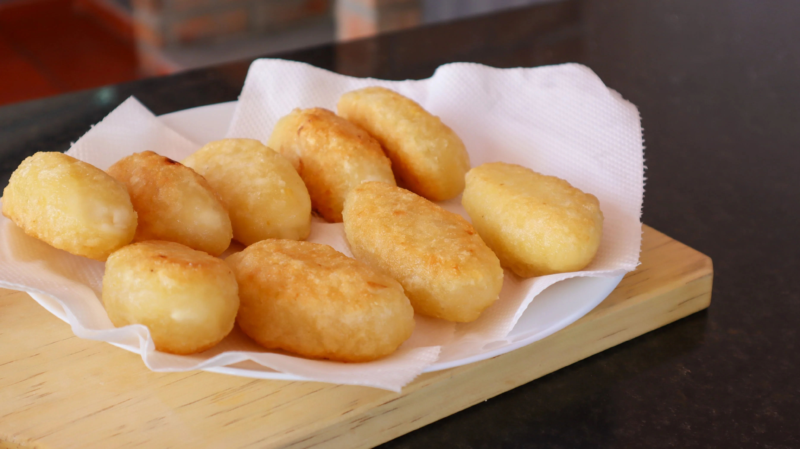
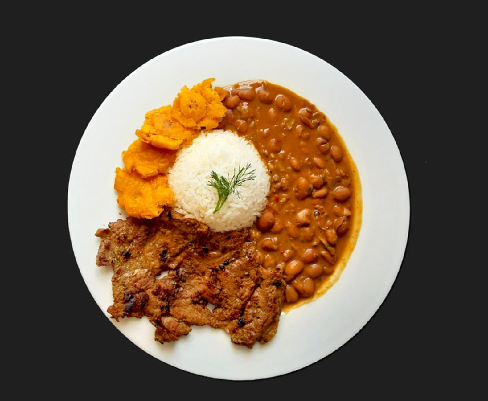
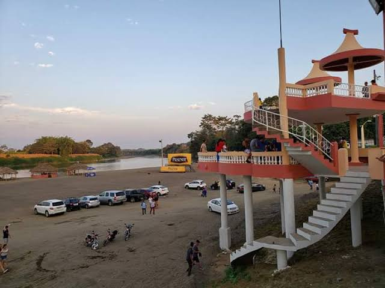
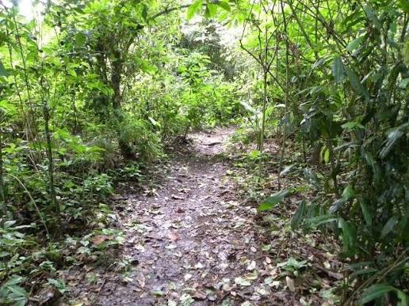

Palenque es un cantón de la provincia de Los Ríos, conocido por sus tradiciones montuvias y su actividad agrícola. Sus habitantes se dedican al cultivo de arroz, cacao y banano.
Palenque es la parroquia urbana y cabecera cantonal. Su territorio rural está formado por recintos y comunidades.




Se pueden consultar hospedajes y residenciales en la cabecera cantonal.
Jordy Carriel Navarrete (período 2023-2027; verificar autoridad vigente).
Aproximadamente 25.000 habitantes (referencia del Censo 2022).